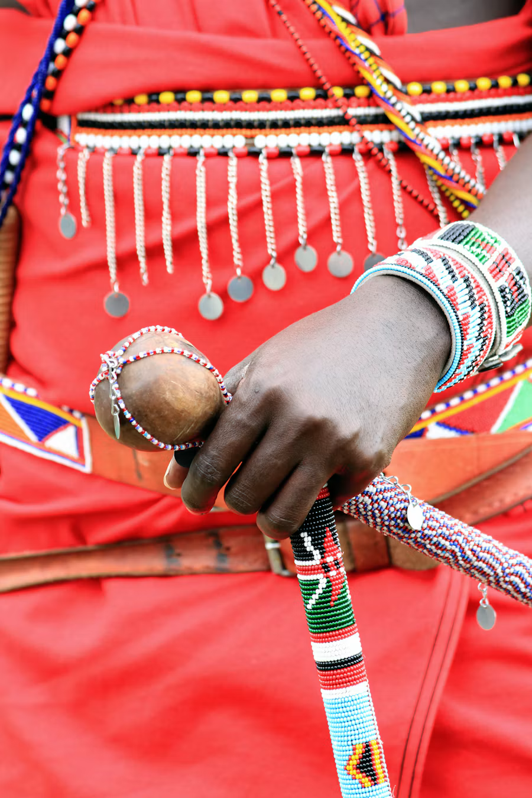

Craft · AdornmentBeadwork carries more than colour
Across communities in Kenya, beads appear in personal adornment and ceremonial life. Their meanings, materials, and patterns are specific to makers and context—not one story for everyone.
Read the field note
Look closely at how beadwork is made, worn, and passed on. Ask who made a piece and what it means to them; the maker’s own account matters more than a broad label.